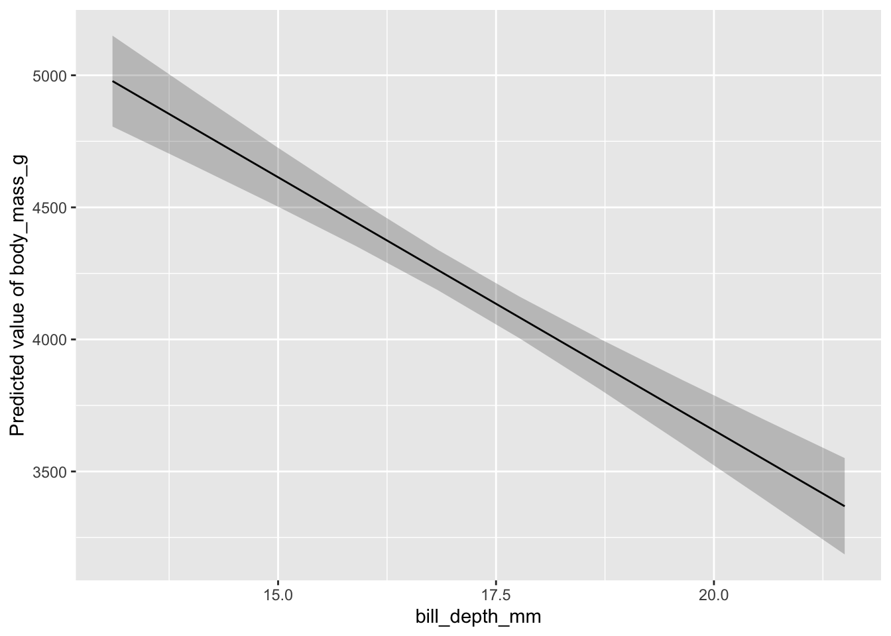

data("penguins", package = "palmerpenguins")penguins-simpson
lm
bayes
regression
causal
1 Aufgabe 1
Laden Sie den Datensatz penguins (Palmerpenguins). Tipp: Es gibt ein R-Paket, in dem diese Daten wohnen. Im Skript QM2 finden sich diese Daten auch. Oder im weiten Internet.
1.1 Modell 1
1.1.1 Modell berechnen
Berechnen Sie ein Modell, um den Zusammenhang zwischen Schnabeltiefe (UV) und Körpergewicht (AV) statistisch zu schätzen.
1.1.2 Visualisieren Sie das Modell
Tipp 1: estimate_relation() aus dem Paket easystats, s. QM1 oder QM2. Aber es gibt auch andere Wege.
Tipp 2: Fragen Sie ChatGPT.
1.1.3 Präzision der Koeffizienten
Geben Sie die Präzision der Regressionskoeffizienten an. Interpretieren Sie das Ergebnis.
1.2 Modell 2: Gewicht als Funktion von Schnabeltiefe und von Spezies
1.2.1 Modell berechnen
Berechnen Sie folgendes Modell: Gewicht als Funktion von Schnabeltiefe und von Spezies
1.2.2 Visualisieren Sie das Modell
wie oben
1.2.3 Präzision der Koeffizienten
Vergleichen Sie die Präzision der Regressionskoeffizienten mit dem Modell 1. Interpretieren Sie das Ergebnis.
2 Lösung zu Aufgabe 1
2.1 Modell 1
Daten importieren:
Achtung: Das Paket muss installiert sein.
Pakete starten:
library(tidyverse)
library(easystats)Modell berechnen mit lm, d.h. “frequentistisch”:
m1_freq <-
lm(body_mass_g ~ bill_depth_mm, data = penguins)Mit Bayes:
library(rstanarm) # Paket muss installiert sein
m1_bayes <-
stan_glm(body_mass_g ~ bill_depth_mm, data = penguins,
refresh = 0)Modellparameter:
parameters(m1_freq)| Parameter | Coefficient | SE | CI | CI_low | CI_high | t | df_error | p |
|---|---|---|---|---|---|---|---|---|
| (Intercept) | 7488.6524 | 335.21782 | 0.95 | 6829.2904 | 8148.0144 | 22.339661 | 340 | 0 |
| bill_depth_mm | -191.6428 | 19.41698 | 0.95 | -229.8353 | -153.4502 | -9.869853 | 340 | 0 |
Pro Millimeter Schnabeltiefe sinkt das Gewicht um knapp 200g, im Schnitt, laut Modell.
Die Null ist NICHT im Schätzbereich enthalten, also können wir die Hypothese, dass der Zusammenhang zwischen Schnabeltiefe und Gewicht 0 ist, verwerfen.
Wir entscheiden uns also zu glauben, dass es einen Zusammenhang gibt. Wir können nicht ganz sicher sein, aber das Modell befürwortet diese Entscheidung.
Allerdings sind wir nicht sicher, ob das ein Scheinzusammenhang ist oder ein “echter”, d.h. kausaler Zusammenhang.
parameters(m1_bayes)| Parameter | Median | CI | CI_low | CI_high | pd | Rhat | ESS | Prior_Distribution | Prior_Location | Prior_Scale |
|---|---|---|---|---|---|---|---|---|---|---|
| (Intercept) | 7492.4114 | 0.95 | 6829.9136 | 8164.6554 | 1 | 0.9997712 | 3898.876 | normal | 4201.754 | 2004.886 |
| bill_depth_mm | -191.6729 | 0.95 | -230.8608 | -153.8502 | 1 | 0.9997105 | 3867.976 | normal | 0.000 | 1015.239 |
Ein typischer Befund: Frequentistische und Bayes-Ergebnisse sind - bei genügend großen Stichproben - sehr ähnlich, was die Zahlen betrifft. Sehr unterschiedlich ist aber die Interpretation.
Bayes-Interpretation:
“Mit 95% Wahrscheinlichkeit liegt der Effekt zwischen -230g und 150g pro Millimeter Schnabeltiefe, laut dem Modell.”
Frequentistische Interpretation:
“Würde man sehhhr viele Stichproben aus der zugrundeliegenden Population ziehen und für jede Stichprobe ein 95%-Konfindenzintervall berechnen würde, dann würde in 95% der Fälle das wahre Populationsmittel in diesem Intervall liegen. In unserer konkreten Stichprobe lagen die Grenzen bei ca. -230 bis -150. Ob der wahre Wert in diesem bestimmten Intervall liegt, können wir aber nicht sagen.”
Modell visualisieren:
estimate_relation(m1_freq) |> plot()
2.2 Modell 2
Modell berechnen mit lm, d.h. “frequentistisch”:
m2_freq <-
lm(body_mass_g ~ bill_depth_mm + species, data = penguins)Mit Bayes:
library(rstanarm) # Paket muss installiert sein
m2_bayes <-
stan_glm(body_mass_g ~ bill_depth_mm + species, data = penguins, refresh = 0)Modellparameter:
parameters(m2_freq)| Parameter | Coefficient | SE | CI | CI_low | CI_high | t | df_error | p |
|---|---|---|---|---|---|---|---|---|
| (Intercept) | -1007.28112 | 323.56097 | 0.95 | -1643.72793 | -370.8343 | -3.1131107 | 338 | 0.0020093 |
| bill_depth_mm | 256.61461 | 17.56282 | 0.95 | 222.06840 | 291.1608 | 14.6112380 | 338 | 0.0000000 |
| speciesChinstrap | 13.37732 | 52.94712 | 0.95 | -90.77005 | 117.5247 | 0.2526544 | 338 | 0.8006889 |
| speciesGentoo | 2238.66811 | 73.68183 | 0.95 | 2093.73542 | 2383.6008 | 30.3829071 | 338 | 0.0000000 |
parameters(m2_bayes)| Parameter | Median | CI | CI_low | CI_high | pd | Rhat | ESS | Prior_Distribution | Prior_Location | Prior_Scale |
|---|---|---|---|---|---|---|---|---|---|---|
| (Intercept) | -1006.76639 | 0.95 | -1629.69103 | -343.4282 | 0.99875 | 1.000287 | 3014.707 | normal | 4201.754 | 2004.886 |
| bill_depth_mm | 256.53866 | 0.95 | 221.08996 | 290.5195 | 1.00000 | 1.000239 | 3060.064 | normal | 0.000 | 1015.239 |
| speciesChinstrap | 13.05655 | 0.95 | -91.14321 | 115.5515 | 0.60600 | 1.000133 | 3728.648 | normal | 0.000 | 5015.916 |
| speciesGentoo | 2237.31299 | 0.95 | 2091.80848 | 2381.4340 | 1.00000 | 1.000734 | 3000.973 | normal | 0.000 | 4171.626 |
Äh, Moment … Jetzt ist der Zusammenhang zwischen Schnabeltiefe und Gewicht nicht mehr negativ, sondern POSITIV?! Der Effekt geht in die entgegengesetzte Richtung? Kann das sein?!
Ein Bild zur Hilfe:
m2_freq |> estimate_relation() |> plot()Tatsächlich! Jetzt ist der Zusammenhang innerhalb jeder Gruppe (Spezies) POSITIV.
Das bedeutet: Wenn wir die Spezies berücksichtigen, dann ist der Zusammenhang zwischen Schnabeltiefe und Gewicht positiv.
Diesen Vorzeichenwechsel nennt man “Simpson-Paradox”.
2.2.1 Fazit: Welches Modell ist jetzt richtig?
Da sich die Effekte komplett widersprechen (negativ vs. positiver Zusammenhang) stellt sich die Frage: Welchem Modell - Modell 1 oder Modell 2 - glauben wir jetzt?
Die Antwort ist ein klares: Kommt drauf an. Kommt drauf an, welcher Theorie zum kausalen Zusammenhang der betreffenden Variablen wir glauben.